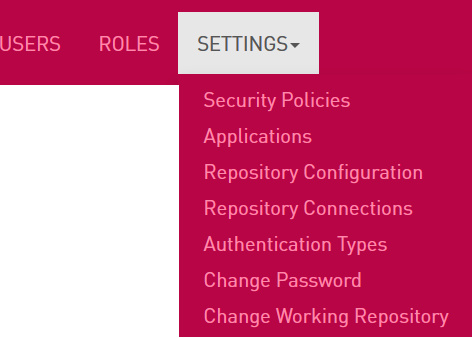
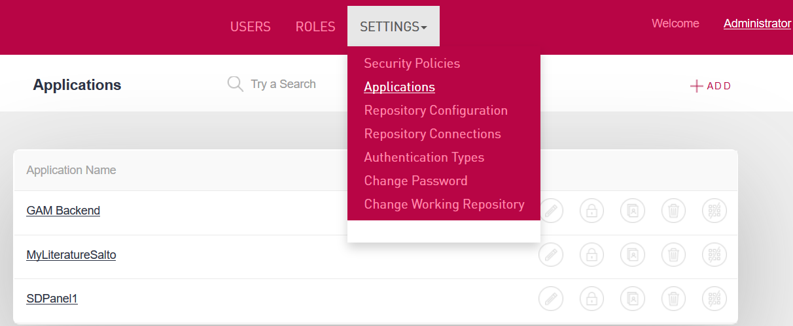
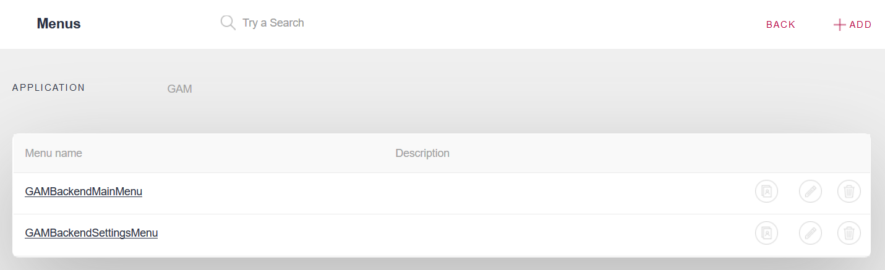
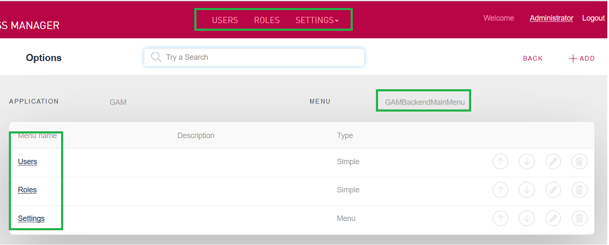
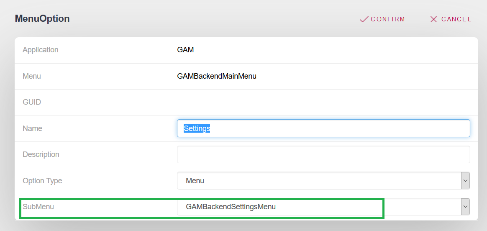
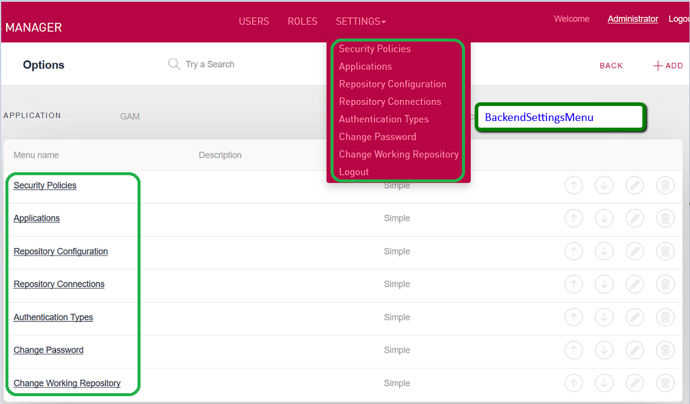

The "GAM Backend" is a GAM Application defined automatically with the creation of the GAM metadata, during the initialization process (for more information about this process see Creating the GAM repository for the first time from GeneXus). The purpose of the "GAM Backend" Application is to group a set of permissions related to some resources (1) of the GAM Examples. They are:
The main purpose for grouping these permissions is to be able to build the Menu of the GAM Backoffice in a dynamic way, using the Action Group Control for the Web control.  GAM Backend Application permitsBy executing the GAM Web Backoffice, going through the "Settings -> Applications" menu option, you can see all GAM applications, including the GAM "Backend" Application.  As mentioned, the GAM "Backend" application groups a set of permissions that may be listed by clicking on the permissions option of the corresponding row, in the Applications grid. GAM Backend menuThe GAM Backend menu is dynamically built using the resources (1) mentioned above. You can edit the GAM Backend menu definition, which consists of two menus, namely: the GAMBackendMainMenu, and the GAMBackendSettingsMenu.  The GAMBackendMainMenu has the following options. One of them (the Settings option) is a menu in itself (the GAMBackendSettingsMenu).  The image below shows the edition of the GAMBackendMainMenu:  The following image is the GAMBackendSettingsMenu menu definition: 
AvailabilityAs from GeneXus 15
|
| Backlinks | |
| Creating the GAM repository for the first time from GeneXus | Flexibility and Quality with Genexus 17 |
| HowTo: Creating New Repositories | |
| Howto: Define a Menu using GAM |